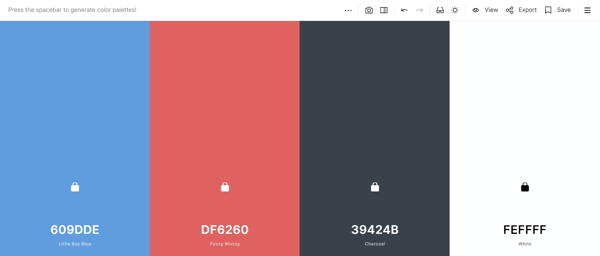
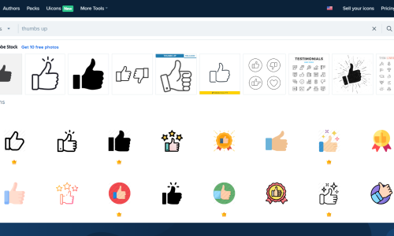
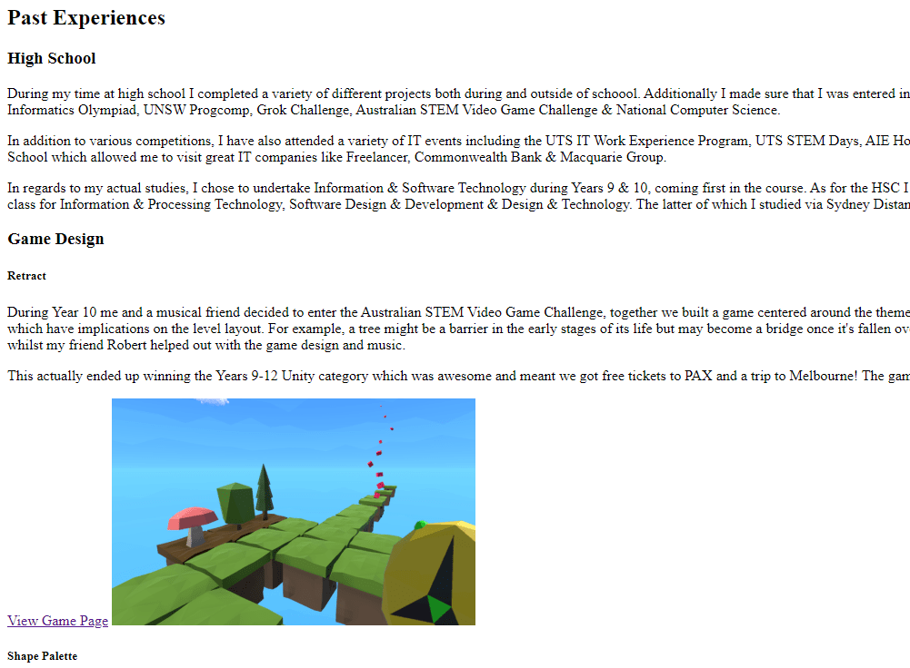
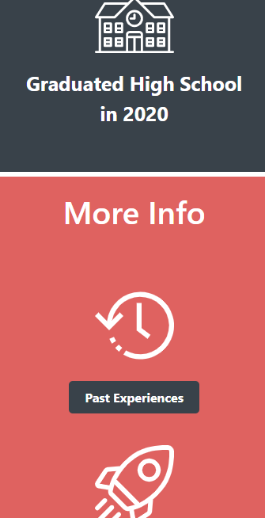
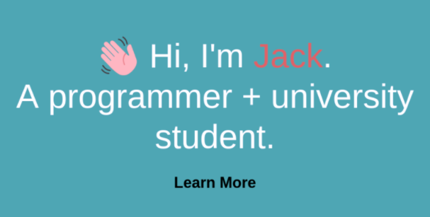

Overall I am very happy with how the website has turned out. The colour choices really make it appealing to the eye whilst still not being too jarring and harming readability. I managed to finish the site relatively quickly so timing wasn't too much of an issue for me and as such it meant I had some extra time to work on making the site more aesthetically pleasing.
However, I did find it difficult being limited to no Javascript or not using any external CSS libraries as I am particularly used to Bootstrap and JQuery. The other restrictions imposed also meant some of the effects I wanted to do such as animating the hand emoji to wave on the main page wasn't allowed and I had to remove them.
I feel the site does a good job of representing me, my past and future experiences, ultimately fulfilling its goal. Whilst I did use classes to try and minimise code duplication I feel as though being allowed to use a dynamic programming language with templating would make my HTML look significantly neater, particularly with areas like the navbar.
I have utilised alot of different HTML elements for this website with over 400 lines of CSS I have a significant amount of both classes and ID's used when necessary. These are all required to ensure that the website has a consistent aesthetic and is visuall appealing.
The website is designed so that it can be templated and into sections. Each of these sections is a div with the .sectionDiv class. This class contains CSS that controls the width, setting it to 100% so that the sections don't have any gaps. Additionally it sets the display to ensure that they don't align side to side and only appear above each other. Each section div also contains a colour class whether it be .grey .red .blue which sets the divs background colour to the relevant one from the palette.
Additionally as per W3's HTML guide, only relevant headings are used, with only one top heading per page so as to not confuse screenreaders. Each of these headings tags have CSS relating to their sizes & font weights to ensure that they are consistent and visually differentiable.
I have also being able to condense my CSS by applying rules to multiple tags. For example for all of my headings and text they share the same font family with fallbacks so it was much easier to write this all as: h1, h2, h3,h4,h5, a, p, li, th, td {
font-family: "Segoe UI", Roboto, Arial, sans-serif;
}
Another style class that I am using very frequently is .inline-img which makes sure that all of my images have a rounded border, maximum and minimum widths as well as being centered and displayed properly against my text.
Padding, margins, borders and whitespace are used very extensively throughout this project to ensure that the reader does not get overwhelemed with alot of text but to also make it easier to differentiate sections. For example almost all of the sections are constrained to width:80%; which makes sure that there is whitespace on the sides of the screen.
I have also made use of the code tags whenever I am discussing HTML or CSS. This allows me to both apply different styles to make it stand out but to also allow users to copy and paste it without any additional metadata obfuscating the code.
Some of the most common classes I have used are in the table below with a short description as to what they are used for:
| Selector | Description |
|---|---|
| body | Sets the default background colour to blue & removes any margins to make sure that the section divs go the full page width. |
| html | Sets the scroll behaviour to smooth so that any inpage links scroll nicely to the destination. |
| code | Sets the colour to orange and the font-weight to be 500. |
| .bold | Sets text to bold. |
| .inline-img | Centers an image and allows adjacent ones to be next to it if there is space. |
| #welcomeSection | Makes the welcome page div center its content and fit the screen height. This is an ID because there is only one occurance of it. |
Visuals were a key consideration when creating the site, I needed to make sure that it both looked good but also ensure the visuals didn't detract from the page, make it difficult to read the text or see content. In order to make sure that I had a consistent, universal theme throughout I decided to create a colour palette utilising an online colour palette generator.
Using this tool I was able to quickly scan through lots of different complimentary colours to choose the palette as well as reference back to this whenever I needed the colours hex codes to ensure that different pages didn't have any variation.
I have tried to mix and match these colours in order to create variation, dividing the pages up into sections which each have a different background colour. Across all the pages I made sure never to put blue and red next to each other, always choosing to use the darker black background as an intermediary colour to ensure that the background of the page wasn't too distracting.
Consistency was key to ensuring that the website was aesthetically pleasing, as part of that I made sure to have all the headings utilise the same formatting, fonts and sizes to ensure that the users could easily distinguish between different levels of headings.
I have also tried to break up chunks of text and make the website visually appealing through the use of images, particularly icons. I have heavily utilised a free icon site called Flaticon which has a database of over 100,000 icons. This site allowed me to download high quality images, that most importantly, had a consistent style which I could use on the site. All of the icons chosen had rounded curves as opposed to straight lines which complimented the style of my site. I have also tried to show this style through rounded edges on both the buttons and images throughout.
Ensuring that my website is accessible to a variety of individuals was a key priority. Following the W3schools accessibility standards was one of the ways I wanted to try and ensure that everyone could use it where possible.
One of the ways I did this was by ensuring that all images had alternate text so that a screen reader could describe the images to a visually impaired user. Additionally the site should function and be usable with all CSS disabled and as such this was a key priority which meant I had to resize alot of my images so they appeared properly.
Additionally my website is fully usable via a keyboard so that someone who has difficulty using a mouse can use a combination of the arrow keys, tab and enter to navigate my website.
Whilst accessibility to individuals with disabilities is important, I also needed to consider users on different devices. As such I ensured that my website was fully responsive and worked with a variety of different devices and browsers including mobiles and desktops. I also tested the site at a variety of zoom levels to ensure that users who wish to zoom in or out can get the appropriate response.
Finally to ensure my website was accessible to colourblind users I applied a colourblind filter to check that it was easy to differentiate text and images from the background.
 Home
Home Past Experiences
Past Experiences Future Plans
Future Plans Design Comments
Design Comments